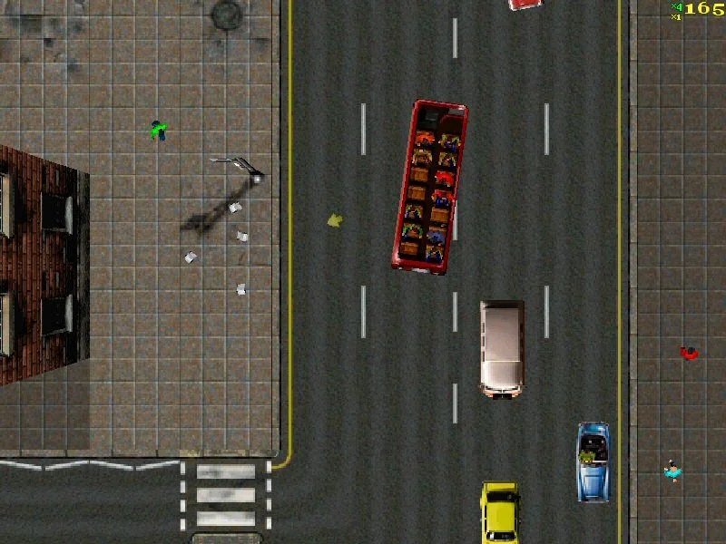
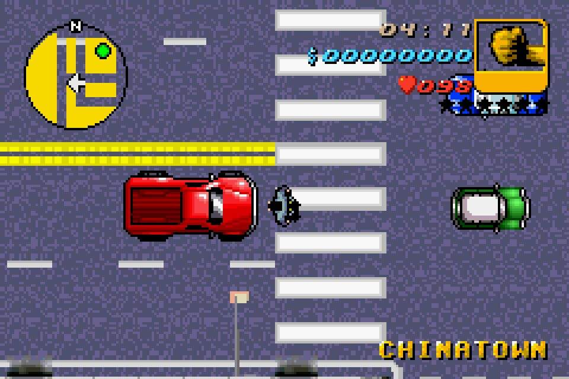
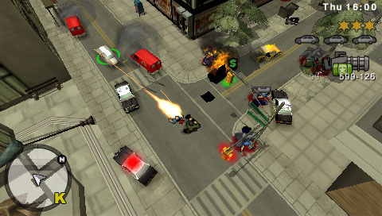

Los peores juegos de cada universo GTA
30/8/2026Universo 2D: GTA London

Este es un DLC de GTA 1 lanzado el 31 de marzo de 1999 para PC y el 30 de abril en PlayStation 1. El juego sucede en 1969 y en este controlamos a criminales británicos que tienen que hacer misiones por las ciudades de London y Mánchester para ganarse la vida.
¿Lo malo?
Este juego cuenta con gráficos iguales a los de GTA 1, los cuales son caricaturescos y algo raros a comparación de estilos posteriores. También tiene las dos ciudades más pequeñas de todo este universo de juegos. Y lo peor de todo es que solo hay cuatro armas disponibles: pistola, metralleta, bazuca y lanzallamas.
Universo 3D: GTA Advance

Es un juego que además de malo, es el menos conocido de este universo. Salió el 29 de octubre de 2004 para la Game Boy Advance exclusivamente. Sucede un año antes que GTA 3 (2000) y en este juego controlamos a Mike, un criminal que junto a su amigo Vinnie, tiene la misión de recaudar dinero para escapar de Liberty City; pero por cosas del destino, pasan diferentes acontecimientos que dañan sus planes.
¿Lo malo?
Su historia es simple y sin mucha emoción, el protagonista del juego es el menos carismático y más aburrido de toda la saga, tiene gráficos muy malos y muchos bajones de FPS (algo medio justificado por ser un juego de Game Boy Advance), cuenta con el mapa más pequeño de (igualmente) toda la saga y cuenta con muy pocas cosas que hacer en el mundo libre.
Universo HD: GTA Chinatown Wars

Este juego fue muy disfrutado por los jugadores de consolas portátiles, pero aún así es el peor juego a comparación del resto de juegos HD de la época. Salió el 17 de marzo de 2009 para DS, PSP y celulares.
Aquí se controla a Huang Lee, un joven chino que va a la ciudad de Liberty City para entregar la espada de su padre fallecido a su tío Kenny, pero que por desgracia es perdida, y ahora debe recuperarla haciendo trabajos por toda la ciudad.
¿Lo malo?
Es un juego cámara aérea, lo que lo hace algo anticuado a comparación de otros juegos más vistosos de la época y cuenta con muy poca personalización (cosas faltantes como ropa o autos personalizados).
¿Te gustó esta entrada? Por favor guarda esta página en tus favoritos para que veas más contenido en un futuro. ¡Gracias por ver!